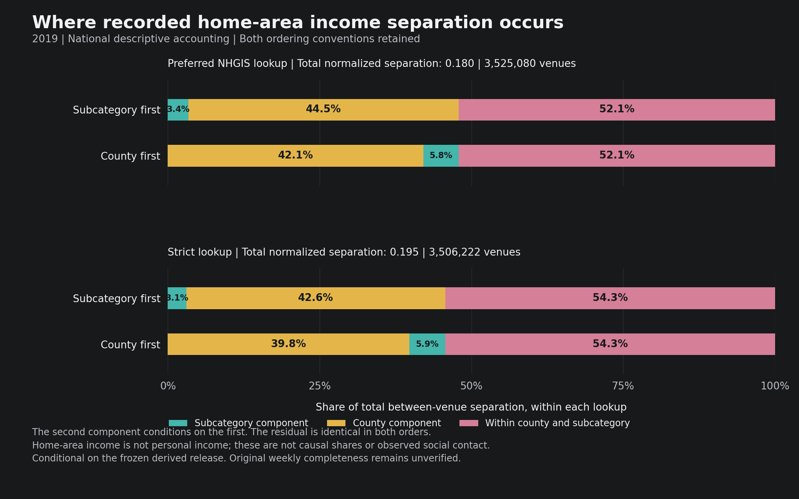

Headline: about half of measured income separation remains between venues of the same subcategory in the same county. This is not a regression or a causal explanation.
Reading guide: the figure and two tables below show the complete national accounting. Income refers to visitors' home-neighbourhood median household income, not their personal income. Detailed methods and dated source snapshots follow.
20 October 2026. Completed, verified descriptive calculation on the frozen derived release. This is not a regression, a new causal result, or certification of the original weekly data.
Main finding
In the preferred construction, 52.1% of measured between-venue income separation occurs between venues within the same recorded county and subcategory. Differences between counties account for 42.1%, with a further 5.8% between subcategories within counties. These are accounting components, not causal explanations.
The question is therefore not only whether people from different income backgrounds visit different types of places or different counties. Substantial differences remain among venues carrying the same service label in the same county. That is a reason to investigate more local geography and venue characteristics, not yet a finding of preferences or discrimination.

Data and construction
The calculation joins the saved 2019 annual origin-CBG flow dictionaries to the harmonized POI indices by exact venue ID, and classifies origins using the existing harmonized ACS income lookup. It uses the 2015-2019 ACS five-year wave on harmonized 2020 block-group geography.
The ten groups are national unweighted ranks of CBG median household income, not deciles of individual visitors, equal-population deciles, personal earnings, or per-capita income. We use the preferred NHGIS lookup and retain the strict one-source sensitivity construction. The historical tdw field names in this release are checked against their NHGIS aliases. Weighted source medians do not recover exact target-geography medians.
Weights are recorded positive annual origin-flow counts. They are neither unique annual people nor annualized raw visits. Origins without usable income classification are excluded from both the classified numerator and denominator, without imputation. Unknown/null flow amounts are not assigned zero observed visits.
Every matched venue is reconstructed. National accounting requires a recorded county, a literal SUB_CATEGORY, and positive classified income mass. Missing recorded MSA is not an exclusion. Each lookup has its own eligible support. No employee, attitude, social-capital or city-size variables enter. This is destination-based accounting, not resident-origin exposure.
| Support and coverage | Preferred NHGIS | Strict |
|---|---|---|
| Eligible venues | 3,525,080 | 3,506,222 |
| Recorded county codes | 3,136 | 3,136 |
| Literal subcategory labels | 624 | 623 |
| Classified share of known positive origin-flow weight, all venues | 97.30% | 68.00% |
| Eligible venues without recorded MSA | 187,191 | 185,800 |
The coverage percentages use all source venues, not just the eligible accounting sample. Recorded geographic fields are not independently certified locations. These counts do not establish representative coverage of the population or its trips.
Measurement and complete accounting
Let G denote home-area income group, V venue, K subcategory, and A county. Pool eligible recorded flow nationally within each lookup. Total separation is I(G;V) = H(G) - H(G|V): the difference between pooled income-group entropy and the flow-weighted average entropy within venues.
All normalized components use the same pooled H(G) within a lookup. The normalized total is 0.179929 under the preferred lookup and 0.195204 under the strict lookup. Zero would mean identical group composition at every venue; one would mean each venue contains only one income group. A value of 0.18 does not mean that 18% of visitors are segregated. The raw totals are 0.409438 and 0.443200 nats, respectively.
The following tables instead divide each component by total measured separation I(G;V), so each three-row panel sums to 100%. This is a different denominator from the normalized index above.
Subcategory first
I(G;V) = I(G;K) + I(G;A|K) + I(G;V|A,K)
| Component: share of total separation | Preferred NHGIS | Strict |
|---|---|---|
| Between subcategories | 3.37% | 3.08% |
| Between counties within subcategories | 44.54% | 42.59% |
| Between venues within county and subcategory | 52.09% | 54.32% |
County first
I(G;V) = I(G;A) + I(G;K|A) + I(G;V|A,K)
| Component: share of total separation | Preferred NHGIS | Strict |
|---|---|---|
| Between counties | 42.06% | 39.77% |
| Between subcategories within counties | 5.84% | 5.91% |
| Between venues within county and subcategory | 52.09% | 54.32% |
The first two allocations depend on ordering; the residual and total do not. These are not category fixed-effect coefficients or effects of adding venues. The strict result retains the broad pattern, but its much lower flow coverage and different eligible sample prevent a fixed-support interpretation of the difference. Both constructions also share upstream data and assumptions. All six components in nats, normalized units and component shares are in the complete table.
What was checked
All 3,526,891 venue IDs match one-to-one between the two source rosters, with no duplicate IDs or recorded MSA/combined-category conflicts. All 31,742,019 saved-scalar comparisons pass: origin-flow total plus four income measures under each lookup. The largest discrepancy is 8.88e-16. The pre-specified absolute/relative tolerances were unchanged.
The separate verifier checks the full artifact identities, national saved-scalar support/mass accounting, mathematical identities and disclosure gates. All 6,686 retained venue-by-lookup vectors from the independently verified pilot agree exactly, including group positions and membership. This reuses the pinned pilot verification; it does not rerun the old pilot or independently reconstruct every new venue a second time.
Direct information calculations agree with entropy differences; both accounting orders and normalization/bounds pass. The national release passes the frozen support and maximum-venue-contribution gates and a separate field/value disclosure review. There are 119 passing focused artificial-data tests, including rejection of altered snapshots and inconsistent summaries. The three renderer tests also pass after the final label-only adjustment.
The local full-year run took 39.8 minutes, including hashing and roster construction. Verification, software tests, review and reporting took additional time. No Hamilton job was submitted. Originals were read-only and unchanged; detailed rows, vectors and working databases remain private.
Limits and next decision
- Upstream integrity remains unresolved. David supplied the raw-download location but cannot identify which years are corrupted. No original raw archive was opened. Current raw-copy corruption does not prove historical job-input corruption, and internal consistency does not prove complete original weeks, valid partition handling or correct production assembly. Source-code review 116 records the relevant risks and remaining run-manifest needs.
- Income is a home-neighbourhood attribute. Rich and poor residents can share a CBG. These results do not identify individual incomes.
- Annual clientele composition is not social contact. Visitors can attend at different times and never interact; workers are not identified.
- County and subcategory are coarse controls. The residual can include residential location, travel costs, different neighbourhood markets, prices, chains and other products. It is not evidence that people offered the same menu prefer different co-patrons.
- No inference or causal effect has been estimated. Recorded flow mass is not a sample of independent people. There are no standard errors, confidence intervals or attitude coefficients in this exercise.
Decision: continue, narrowly. This supplies the full-year descriptive accounting that the small engineering sample could not support. The next useful test is whether the within-county/subcategory component remains substantial after independently defining finer local markets and measuring product differences. That requires a new prospective linkage/support rule and the appropriate file-specific permission; it has not been run here. Keep original weekly replication as a separate audit, preserve contrary results from earlier count and attitude exercises, and do not promote this accounting identity alone into a publication contribution.
Protocol: full-year scope. Operations and replication: construction log 117. Shared delivery is recorded separately; this note is not a Project upload or website-publication claim.
Current next steps
Category calculation complete; detailed release withheld. The follow-up covers every literal subcategory under both lookups. It ran in 105.4 seconds, and its weighted totals reproduce the national accounting. A separate high-precision fixed-sample check also passes. Both maximum discrepancies are 4.44e-16.
The planned report combines category tables and top-five summaries. Their overlaps expose a small lookup-only remainder below the fixed 20-venue minimum. A separate implementation independently confirms this disclosure stop. No category table, concentration estimate or restaurant result is released; thresholds and the preselected benchmark remain unchanged. This is not a null economic finding or a failure of the national calculation.
Coordinate/county audit completed, 20 October. At least 99% of the recorded contiguous-US/DC income-roster union satisfies the fixed coordinate, unique county-match, recorded-county agreement and finite-projection rules. The saved roster and direct-predicate sample reconcile. A separate verifier confirms saved-ledger eligibility, diagnostics and unchanged hashes; it does not independently reproject or rematch the original points. The audit took 126.5 seconds. This is a geographic support check, not a new income result or certification of original weekly data.
Next substantive test: how much separation remains within smaller areas? The prospective comparison uses 20, 10, 5 and 2.5 km grids, two origins and common venue support across the income lookups; 5 km is primary. All eight partitions are fixed before outcomes. Smaller cells mechanically reduce the residual, especially when only one venue remains, so singleton flow and support changes must be reported. No smaller-area income outcome has run. Grid cells do not establish shared choice sets, preferences or causal effects.
Read the complete geographic-audit note, construction and verification log, and fixed finer-geography protocol. The geography source manifest records their hashes. Provider coordinate datum and geography vintage remain unverified; the stated transformation accuracy is not geocoding accuracy. Alaska, Hawaii and territories are outside this geographic extension, not removed from the earlier national result.
Read the complete follow-up note, construction and verification record, and coarse independent stop-verification receipt. The follow-up delivery manifest records their hashes. These are reviewed documentation snapshots, not category data.
Earlier contrary evidence remains: the broader-category distinct-venue count gradient was near zero after geographic adjustment. The national accounting does not overturn that result or establish an attitude effect.
Source snapshots
Each link below is a complete dated source, copied without changing its bytes. This report supersedes the pilot-only statement that full-2019 income accounting is unrun, not the historical results or protocols. The original note's pending-permission wording is historical; the current-next-steps section records the later authorization and category follow-up. These files are snapshots, not live repository access.
The aggregate JSON retains its original candidate label to preserve byte identity. The separate disclosure approval below clears that exact SHA-256. No raw rows, venue identifiers, local cells or source configuration files are included.
Complete research note 117 SHA-256 2f7cae88feadb89014e589831a93e13969f0f6ecc5cf6e11a69c379468c0bb81
Complete source-code review 116 SHA-256 f8e4c354ae40eae0dab3b921b414109c0e81dc7be783edae9b86594c49fbfb4a
Complete frozen full-year protocol SHA-256 816eed49cda4c3ae7c9534a20ca986a4b9f5393f5d9238868336c247b5dd30ff
Complete construction log 117 SHA-256 4de9875053f1041e91e664993e3cfbc16c5c567906a17969cbbe3e94f0458b94
Exact reviewed national aggregate SHA-256 c41adda44b36ef8cdcbfd20141269b0d7100e2dbece509c97e53158e939fa900
Independent disclosure approval SHA-256 7673d659ed7937784b7e49f7bb030f391116826ba0c0258812f89fe1d3435bc8
Complete accounting table SHA-256 12a85eb30663fc0327e6fd9be3d4c621690e9ec15e4c12c5d9b5f23d6dde2bb4
Both accounting orders and lookups SHA-256 240dbcec33abc40578c2c16e4242956d7bd62256bd82314185431b298f011f55

Original national-report publication manifest. Its page hash identifies the original 20 October report; the follow-up manifest above identifies this updated page. The national source and data files are unchanged.